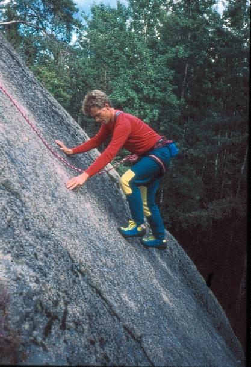
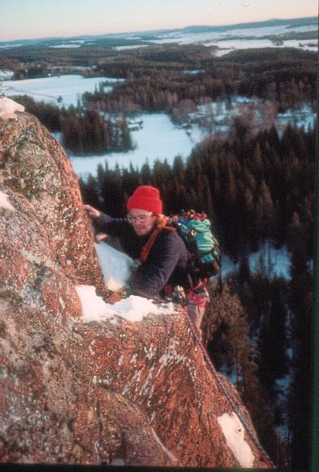

Bispbergs klack
Lat: 60.34611594594461
Long: 15.80559253692627
Allmänt
Det är sedan 1996 totalt förbjudet att klättra på Bispbergs klack, men det vore synd om den dokumentation som finns kring de leder som etablerades där mellan cirka 1967 och 1987 – den tid då i princip alla bergets över 150 leder gjordes – bara ska finnas i minnet hos dem som gjorde lederna. Klättringen i Bispberg hör till svensk klätterhistoria och bör finnas dokumenterad. OBS! Denna artikel kommer att kompletteras med skisser så snart dessa är färdiga.
Vägbeskrivning
Med tåg åker man till Säter, och därifrån är det ungefär 3 km promenad längs vägen till berget. Med bil: se karta. Kommer man med bil gäller följande för den sista biten: Åk in på Carusovägen, direkt vänster efter infarten till Klacken, parkera vid vägens slut och följ därefter snitsel. Promenaden från parkering till berget tar cirka 15 minuter.
Inledning
Det är sedan 1996 totalt förbjudet att klättra på Bispbergs klack, men det vore synd om den dokumentation som finns kring de leder som etablerades där mellan cirka 1967 och 1987 – den tid då i princip alla bergets över 130 leder gjordes – bara ska finnas i minnet hos dem som gjorde lederna. I minnet hos dem som hade förmånen att klättra i Bispberg under bergets glansperiod och i det fåtal förare som gavs ut och som numera samlar damm hos dem som äger ett exemplar.
Klättringen i Bispberg hör till svensk klätterhistoria och bör finnas dokumenterad. Vilket bättre ställe att samla sådan dokumentation än Sverigeföraren? I ett av de inlägg som skrevs till Länsstyrelsen i samband med naturreservatsbildningen jämfördes Bispbergs klacks betydelse för svensk klättring med Mälarens och Stockholms skärgårds betydelse för svensk långfärdsskridskoåkning. Det är kanske en något överdriven jämförelse, men den saknar inte verklighetsförankring.
Utgångspunkten för denna sammanställning är Uppsala Klätterklubbs Bispbergsförare från 1982, föraren ”Klättring i Dalarna” som författades av Johan Luhr, Anders Wester, Arne Johnsen och Lars Svadängs, och som gavs ut av Dalarnas Klätterklubb 1986, samt ett supplement som gavs ut av DKK året därpå. Vissa egna korrigeringar och kompletteringar har ibland gjorts Redogörelsen för naturreservatsbildningen och klätterförbudet i historikavsnittet har dock skrivits av den som från Svenska Klätterförbundets sida höll i ärendet. Eftersom alla dokument från ärendet finns gömda någonstans i Förbundets arkiv är denna redogörelse tagen ur minnet och är därför både subjektiv och säkerligen behäftad med en del detaljfel.
Access
Totalt klätterförbud råder året runt sedan 1996. Beslutet finnas att läsa här:
Inledning från den tryckta föraren
Med cirka 160 leder, varav inte många skulle behöva skämmas för sig på någon svensk klippa, förtjänar Bispberg ett bättre rykte än ”det där mossiga berget i Dalarna”. Den skogiga inramningen till berget ger en trivsam atmosfär till lägerlivet, men det gör det samtidigt svårt att få överblick över väggarna. Den här föraren har tillkommit för att besökande klättrare ska få en chans att pröva de bästa lederna istället för att irra omkring med glasartad blick bland träden och leta. Dessutom vill vi ge en någorlunda fullständig bild av vad som hittills klättrats i Bispberg och därmed komplettera tidigare guider som vi och Uppsala Klätterklubb givit ut. Ett stort tack riktas till Uppsala Klätterklubb som bidragit med information.
Berget och omgivningarna
Det branta partiet i Bispberg utgörs av flera väggar där den sammanlagda längden uppgår till ungefär 300 meter. Som högst är klippan 80 meter. Bergarten är granit, och stenen oftast av mycket god kvalitet. Möjligheterna att säkra med kilar är i allmänhet utmärkta, men man träffar på bultar på de flesta äldre leder. På några standplatser finns dessutom fastgjutna bultar. Med ett par undantag är de beskrivna lederna omsorgsfullt befriade från lav, mossa och annan växtlighet som känsliga klättrare bedömt som störande.
Till trivseln i Bispberg bidrar förutom den fina klättringen även vackra omgivningar och utomordentliga tältmöjligheter nedanför berget. Camparens tillvaro har underlättats genom föredömliga insatser av händiga dalmasar, och numera finns både eldstad (använd bara de som redan finns), vedförråd, torrdass och vattenkälla på bekvämt tältavstånd.
Förarens uppläggning
Berget är uppdelat på åtta olika sektioner, och lederna beskrivs med början längst till vänster. Riktningar anges hela tiden som en betraktare nerifrån ser berget. Några sällan klättrade eller ”triviala” varianter har utelämnats, liksom alla leder som endast har klättrats med topprep.
Visserligen varierar uppfattningen om vad som är en ”bra led”, men vi har ändå försökt oss på en kvalitetsbedömning som kanske kan underlätta turvalet för stressade blixtbesökare. Lederna är betygssatta med ett stjärnsystem, där ledens linje samt klättringens kvalitets och jämnhet bedömts. En led med ojämn klättring får därför ett lågt antal stjärnor, även om den innehåller väl så intressanta krux. Vidare har varianter eller mycket korta leder inte tagits med i bedömningen. Avsaknad av stjärnor behöver alltså inte betyda att leden ej är värd att göras, och förhoppningsvis kommer detta att framgå av textdelen.
Gradering
UIAA-skalan har använts, 1-7 för friklättring och A1-A4 för artificiell klättring. Graderingen gäller den svåraste passagen på leden. Varianter är graderade efter sin självständiga dels svåraste passage (delar som är gemensamma med huvudleden kan vara svårare).
Nedstigning
Brukar bli aktuellt så småningom. Rännan mellan Explorerväggen och C-väggen är den vanligaste nedstigningsvägen (bitvis småklättring samt fast stålwire). Det går också att gå runt berget på båda sidor. Den tydliga rännan mellan A- och B-väggen som kanske kan verka lockande är mycket lös.
Historik
Bispbergs alpina historia har inte gått att spåra längre tillbaka än till mitten av 60-talet. Säkert har en och annan förbifarande fjällklubbare ögonklättrat väggarna från landsvägen innan dess, och kanske till och med funderat på att åka dit någon gång. Enligt vanligtvis trovärdiga källor togs den första mer handgripliga kontakten med berget av några dalaklättrare år 1965. Utvecklingen började stillsamt med några besök per säsong då man klättrade passager på måfå som träning för turer i fjällen. Ett gäng stockholmare med Hasse Hellström i spetsen lär ha varit uppe och ”rekat” vid den här tiden också.
Klassikern på C-väggen som klättrades och rensades av Tommy Sandberg och Lasse Ström blev den första sammanhängande leden uppför berget. Sin nuvarande slingriga sträckning fick leden 1968, tidigare klättrade man upp i den lösa rännan mitt på väggen. Tommy, Lasse och P-G Bjurman kunde sedan i lugn takt välja ut och plocka åt sig godbitarna under åren som följde. Blåkullla gjordes 1969. A-traversern och Tallbarrsleden gjordes året därpå. Pionjärerna namngav lederna efter sitt läge på berget med en bokstav och ett nummer. Bara namnet B2 har lyckats överleva från den tiden, och numera präglas lednamnen av förstabestigarnas mer eller mindre sprudlande fantasi.
År 1974 bildades Dalarnas Klätterklubb, och samma år arrangerades också den första stora klätterträffen i Bispberg. Därmed började också klättrare från andra håll i landet få upp ögonen för klacken. Vi nästa års träff gjordes den första leden på Svarta Plattan, då Kenta Lindström och Anders Karlsson från Stockholm klättrade Broderskapet. Kenta han också med att ”kolla in” Friheten från topprep. Klätterförbundets årsmöte hölls i Bispberg 1976, och under den träffen började Friheten framtså som ”leden” i berget. Skimret har kanske avtagit lite sedan dess, men Friheten är utan tvekan fortfarande mycket väl värd att göra.
Hösten 1977 klättrades det imponerande taket på Fru (dåvarande Fröken) Lundgrens första replängd som tidigare motstått en rad mer eller mindre allvarliga attacker. Efter Fru Lundgren blev det ett uppsving i jakten på nya linjer. Jämlikheten på Svarta Plattan blev nästa offer. En krokig wirekil markerade höjdpunkten på ett heroiskt försök som slutat ungefär 10 meter upp i mossan för ett par år sedan. Att ta sig vidare från ”Alves kil” såg helt omöjligt ut innan en beslutsam borstningsaktion och inspektion från topprep avslöjade en hel del användbart under mossan. Beväpnad med wirestoppers till tänderna kunde Erik Zeidlitz till slut riva av den eleganta och ihållande första replängden på Jämlikheten.
En krum historia som hittades, borstades och klättrades 1978 var kanske den bästa upptäckten det året. Väggpartiet till höger om Explorer hade tidigare allmänt klassats som ointressant, men inte hade brytt sig om att undersöka möjligheterna speciellt noga. En krum historia var väl dold under lav och mossa, men nu är den med en replängds äkta ”nytelseklatring” en av Bispbergs mest populära leder.
Nästa år gjordes en rad svårare turer. Besökande Rick McGregor från Nya Zeeland blev under en intensiv helg uppskickad på ett antal linjer som ingen vågat sig på förut. Nya Z, andra replängden på Fru Lundgren, Corpsagan och En lång historia blev resultaten. Av de andra lederna som gjordes 1979 tål särskilt Hökfallet, Ökad jämlikhet, Etiskheten och Sträckbänken att nämnas.
I säsongens sista timme ”upptäcktes” Svaplattan långt till vänster på berget. Frenetisk borstning under en kall höstsöndag bäddade för några fina leder året därpå, med en för Bispberg ny typ av klättring. På Svapron introducerades borrbultar för att säkra friklättring, utan att det föregicks av alltför våldsamma etiska grubblerier.
1980 blev annars något av ett mellanår på nytursfronten, men nästa år blev det uppenbart att möjligheterna inte alls var uttömda. NSU och Röda nejlikan som kom till på våren är två ”typiska bispbergsturer” med en blandning av ihållande vägg- och sprickklättring längs tunna sprickor där man kan strö in småkilar. Ett par replängder med njutbar fyraklättring hittades strax till vänster om A-pelarens första replängd (Den nakna rapan och BSA). Bispbergsträffen 1981 gynnades för ovanlighetens skull av uppehållsväder, och några linjer kunde knyckas av alerta besökare. Med gemensamma ansträngningar lyckades Lasse Grankvist och Bogi Palfay friklättra den desperata Fångarnas kör på Svarta plattan.
År 1982 riktades intresset mot nedre A-väggen. Huggormen och Adjunktens sommarlov kom till. Men säsongens höjdpunkt blev när Jan Liliemark friklättrade Fransk sak. Året därpå inleddes med att en ovanlig formation uppstod. På C-väggen frös rinnande vatten till is och på den stundtals bara centimetertjocka isen knep Kent Andersson och Per Calleberg förstabestigningen av den sällan repeterade Midvintersagan. Under 1983 fick dalafolket upp ögonen och med Johan Luhr i spetsen borstades en hel del nya turer fram som till exempel Terror, Marie Antoinette och A-diagonalen. Under 1984 gjordes ytterligare turer av den desperata sorten, Döda din chef, Bli fri och Häng dom högt.
1985 lyckades Johan Luhr att jobba sig uppför den övre delen av Anarkisten och fullbordade Bispbergs första 7+ led. Även en hel del andra leder i 7:a-registret gjordes, bland annat på den överhängande väggen ovanför Mordförsökets första replängd och nu (1986) finns hela 13 stycken 7:a-leder. En ny vägg öppnades av dalafolket och fick namnet Paradisväggen, där det till dags dato finns 8 leder. Några av dem väl värda att göra vid nästa Bispbergsresa.
Till sist: När kommer den åttonde graden till Bispberg? Blir det månne 1986?
Med den frågan avslutades historikavsnittet i 1986 års förare. Med facit i hand kan vi konstatera att svaret på frågan blev ett ja. Under 1986 gjorde Johan Luhr tre nyturer av den åttonde graden: Det hetsade barnet på A-väggen, Dynamisk reträtt på B-väggen och Kung tung på Korpväggen.
Tältplatsen nedanför C-väggen utgjordes av en skogsglänta som Dalarnas och Uppsala Klätterklubbar arrenderade av den dåvarande markägaren som härigenom fick viss kompensation för att just den markbiten på grund av regelbunden tältning inte gick att använda till skogsplantering. Relationen med markägaren hade fram till dess varit bra, och exempelvis bjöds han varje år på middag i samband med den årliga Bispbergsträffen i början av september. Denna skribent har tydliga minnen av ”bonden” som äter ärtsoppa och dricker punch tillsammans med klättrarna. Av anledningar som vi bara kan spekulera kring förändrades villkoren i samband med ett markägarskifte och klubben tvingades flytta på tältplatsen. I supplementet från 1987 står följande att läsa: ”Tyvärr så har vi blivit tvungna att flytta vår tältplats samt parkering. Åk in på Carusovägen, direkt vänster efter infarten till Klacken, parkera vid vägens slut och följ därefter snitsel. Promenaden från parkering till berget tar cirka 15 minuter. Tältplatsen passeras efter halva vägen.”
Bytet av tältplats, från privatägd mark till kommunal mark, var första tecknet på en serie förändringar som så småningom skulle leda till totalt klätterförbud. Den mycket kortfattade beskrivning som ges här av den processen är höggradigt subjektiv och innehåller en del personliga uppfattningar. Den innehåller dock inga osanningar, och i de flesta fall bör det gå att skilja fakta från personliga åsikter och uppfattningar.
Naturreservat med klätterförbud
Under Klätterförbundets årsmöte i Stugun 1992 började det cirkulera rykten om att länsstyrelsen i Dalarna höll på att utreda klättringen i Bispberg och omgående togs kontakt med länsstyrelsen. Förbundet krävde att få bli remissinstans för utredningen. Detta skulle visa sig vara ett klokt drag eftersom det som hade hänt var att länsstyrelsen börjat utreda om ett naturreservat skulle bildas vid Bispbergs klack. Normalt sett var de enda som hade rätt att yttra sig i frågan de markägare och arrendatorer som berördes. Övriga som påverkas av ett beslut om naturreservat, och speciellt ett reservat där allemansrätten kommer att inskränkas, det vill säga allmänheten – alla vi som åtnjuter allemansrätten – har ingen som helst möjlighet att få yttra sig i frågan.
Bakgrunden till att frågan alls kom att utredas hade två komponenter. Dels hade Bispbergs klack, som är ett så kallat sydväxtberg, en plats som genom att så att säga lapa sol utgör växtplats för växter som normalt sett inte växer så långt norrut, utpekats som riksintresse av en utredning mer än tio år tidigare. Dels hade en av markägarna vid Klacken till länsstyrelsen anmält att de avsåg att avverka skogen nedanför berget. Utredningen och reservatsbildningen var länsstyrelsens sätt att stoppa kalhuggning av ett naturskönt område.
Så långt var allt frid och fröjd. Klättrarna hade inte heller tyckt att ett kalhygge hade varit vackert. Problemet för klättringens del var att det på olika vis framkom att klättringen utpekades som ett stort hot mot miljön, framför allt viss växtlighet, vid berget. Därför dök det tidigt upp förslag om totalt klätterförbud i utredningen. Argumenten för ett totalförbud upplevdes som väldigt tunna av klättrarna eftersom de enda känsliga växter som man kunde peka ut var hassel, brakved och backförgätmigej, och dessa växer nedanför berget, inte på klippan. Om klättrarna var ett hot mot dessa växter borde det genom att iordningställa stigar för anmarsch och nedstigning vara lätt att avvärja hotet. Om dessa växter, som förvisso inte växer så mycket längre norrut än här men som är tämligen vanliga bara några tiotal mil söderut, var så skyddsvärda att man inte ville ha någon som alls rörde sig i terrängen, då var det väl ett totalt beträdnadsförbud snarare än ett klätterförbud som var påkallat, resonerade klättrarna.
Sannolikt insåg även motståndarsidan att argumenten var tunna, för flera andra förmenta experter lade sig i debatten. Utan att länsstyrelsen bett dem yttra sig skrev en person på Artdatabanken i Uppsala och en annan person på Världsnaturfonden (WWF) i Stockholm brev till länsstyrelsen, i vilka de uttryckte ungefär samma åsikter. Kontentan av breven var att det borde vara uppenbart för var och en att klättringen är ett stort hot mot miljön i Bispberg, både mot växtlighet och djur, speciellt vid den typ av sydvända väggar som finns där. Intressant nog visade det sig, eller om det rent av framgick i breven, att ingen av dessa brevskrivare hade varit i Bispberg. Klätterförbundet uppfattade inläggen som ohyggligt oseriösa och påtalade detta för länsstyrelsen. Dessutom drog samtliga medlemmar i Klätterförbundets styrelse tillbaka sina stödmedlemskap i WWF.
Plötsligt var det inte bara växterna vid berget som var hotade av klättrarnas närvaro. Kanske hade någon kommit på att klättringen inte kunde vara ett stort problem när dessa växter fanns där trots 30 års regelbunden klättring på berget. Så nu drogs djuren in i bilden. Nu var argumentet att klättringen skulle förbjudas för att inte störa häckande rovfåglar. Det fanns ju, påpekades, inte så mycket rovfåglar på berget. Det borde det göra, ansåg man, och drog slutsatsen att det var klättrarnas fel att där inte fanns fåglar. Alltså borde klättringen förbjudas. Klätterförbundet påpekade att om fågelskydd var syftet fanns ingen anledning att förbjuda klättring året om. Klättring på sensommar och höst, när fågelungarna lämnat boet, borde inte vara ett problem för fågelskyddet.
Nya argument drogs fram. Nu var det inte växtligheten nedanför berget som var ett problem, utan nu antogs att det borde finnas sällsynta arter av mossor och lavar som hotades av klättringen. För att utreda frågan beställdes en inventering från en oberoende konsult, Naturcentrum i Göteborg. De skulle räkna arter på olika ställen på berget, och Kasper Kotake från DKK assisterade med att fira ner biologerna på berget. Inte särskilt förvånande hittade de mest kartlav, tuschlav, blåslav och andra utmärkt vanliga arter. Några intressanta fynd gjordes dock: på några av de mest frekventerade klätterturerna hittades en eller ett par mer sällsynta skorplavar. Genom att klättrarnas framfart avlägsnat de vanligaste, mer livskraftiga lavarterna, så kunde dessa mer sällsynta arter få fäste och leva. I ett telefonsamtal medgav utredaren på länsstyrelsen att detta var ett intressant fynd, men sa också att det inte på något vis skulle ändra på beslutet om att införa klätterförbud i reservatet.
Vid det här laget började de accessansvariga på klätterförbundet som jobbade med ärendet misstänka att det fanns andra orsaker än naturskydd bakom klätterförbudstanken. Det hade en tid cirkulerat rykten som sa att den egentliga orsaken till klätterförbudet var en markägare som hyste personlig antipati mot klättrare i allmänhet. Detta är ett rykte som aldrig bekräftats officiellt eftersom man inte kan införa ett klätterförbud på grund av att en eller några personer vill det. Officiellt måste man luta sig mot naturskydd eller andra mer hållbara argument. Men det kändes som en bekräftelse när på ett samrådsmöte 1995 som Säters kommun kallat till, där Klätterförbundet, Dalarnas Klätterklubb, kommunen, länsstyrelsen och markägarna deltog, en av markägarna sa något i stil med ”det ska ni ha klart för er, att om det blir ett naturreservat, då kommer vi inte ens att få upparbeta vindfällen i vår egen skog. Och då ska ni f-n inte få vara där och klättra heller!” Boende i trakten som inte hade något emot klättringen eller klättrarna berättade också att samma markägare sannolikt låg bakom ovan nämnda inlaga från WWF, och även en skrivelse från Dalarnas botaniska sällskap, då det var känt att där fanns släktskap eller andra band mellan markägaren och personer i de här organisationerna. En markägare kan dock officiellt inte tala om för en länsstyrelse hur de ska besluta. Men om länsstyrelsen vill bilda ett naturreservat kan detta bara ske om de köper marken eller om markägaren går med på att upplåta marken för reservatsbildning. Kanhända kan en länsstyrelse gå med på vissa markägarkrav för att få till ett reservat trots att de inte har pengar att köpa marken.
Hur som helst trädde klätterförbudet vid Bispbergs klack i kraft våren 1996 och sedan dess är det få som har klättrat där. Detta var en tragisk förlust för inte bara svensk klättring, utan även för allt friluftsliv. Fallet visade att det är möjligt att göra stora inskränkningar i allemansrätten utan att ha objektiva och sakliga grunder för att göra detta. Det visade också att sådana inskränkningar i allemansrätten görs av myndighetspersoner som inte är folkvalda och därför inte kan röstas bort i nästa val. Detta hade ju annars varit en möjlighet för allmänheten att visa sitt missnöje med vissa beslut eftersom, som fallet visat, allmänheten inte är remissinstans.
För klättringen var det en förlust därför att Bispberg var det enda berg i Sverige där nybörjare och medelgoda klättrare på ett enda berg kunde skaffa sig ordentlig erfarenhet av flerreplängdsklättring på egna säkringar, upp till tre replängder, inför resor till större berg utomlands. Det går att få sådan erfarenhet nuförtiden också, men inte samlat på ett ställe. Den här skribenten tillbringade två veckor i sträck vid berget sommaren 1982, och klättrade igenom nästan alla bergets turer upp till grad 5+ som träning inför långturer utomlands.
Leder
Paradisväggen

Ny vägg öppnad 1985. Brant ihållande klättring, tyvärr ibland lite kort. Småklättring upp till starten på lederna
- 1
- Flygande partiklar
- 5-
- Hörnet t v om Lilla arêten. En bult i början.
- 2
- Lilla arêten
- 6-
- Den korta arêten till vänster. En borrbult på det ovanliga utsteget.
- 3
- Vilda kliven
- 5+
- Samma insteg som Lilla arêten, därefter rakt upp i hörnet (osäkrat). Därefter ut på svaet till höger (krux).
- 5
- Räddningen
- 5-
- Hörnet till höger om Ögon blå.
- 6
- Niklas blodiga kamp
- 6-
- Kort och intensiv layback i den tydliga sprickan. Något svårsäkrad.
- 7
- Stick och slick
- 7-
- Arêten till vänster, delikat klättring, säkrad med en borrbult plus småkilar. OBS! Sprickan till vänster (Niklas blodiga kamp) får inte användas.
- 8
- Förskäran
- 7
- Arêten till höger. Brutalt vasst insteg, därefter njutbar klättring. En borrbult plus småkilar.
Svaplattan

Kompakt och lagom knottrig granithäll ungefär 150 meter till vänster om den gamla tältplatsen, med en replängds klättring (45 m rep). Nedstigning längs en jordig ramp som kommer ner strax till höger om Svahetens insteg. Friktionsskornas utveckling har medfört att en del friktionsleder blivit lättare än sin ursprungliga grad. Graderingen på dessa leder är fortfarande den ursprungliga.
- 9
- Grundlurad
- 4+
- Starta 5 m till vänster om den egentliga svaplattan. Leden följer en dåligt säkrad grund dieder.
- 10
- Pegasus (a.k.a. Hahnenkammrennen
- 5
- Välborrad slingrande linje till vänster om Svapron.
- 11
- Svapron
- 5+
- Jlämn, ihållande friktionsklättring på perfekt klippa längs svaplattans rygg. Säkras med tre borrbultar. Variant: Fegisleden (4+). Traversera vänster vid första borrbulten och klättra upp till den lätta rännan. Följ Svapron sista biten.

- 12
- Psycho sva
- 5
- Kruxet är dåligt säkrat.
- 13
- SSB
- 5-
- Säkras med tre borrbultar. Instegsvariant: Spansk peppar (6-).
- 14
- Svaheten
- 4-
- Den diagonala linjen i plattans högra del. Samma utstegsdieder som Psycho sva. Lämplig introduktion till friktionsklättringens mysterier, men något svårsäkrad.
A-väggen

50 meter hög vägg med få tydliga linjer. Väggen delas på mitten av en bred hylla och en kort horisontell spricka (A-traversen). För att nå de övre lederna som utgår från hyllan mitt på väggen klättrar man lämpligen första replängden på A-traversen eller någon av lederna på nedre delen. Högst upp finns en mindre vägg som liknar ett Z.

- 15
- Namnlösa diedret
- 4+
- Tydliga korta diedret till vänster om OB+. Ej med på skiss.
- 16
- OB+
- 4+
- Ej med på skissen. Ligger till vänster om A-väggen. Följ ramper och gräshyllor 20-30 m upp i sluttningen till en stor kantställd skiva som är synlig från gamla tältplatsen. Leden följer kaminen ovanför skivan.
- 17
- A-traversen
- 4, kort passage 5- vid insteget
- Brukar klättras i fyra korta replängder. Gå upp över beväxta hyllor till vänster om ett träd som klyvts av ett stort klippblock. Klättringen börjar med en tydlig 8 m dieder ovanför en enbuske. Efter diedern (2 bultar vid kruxet) följs hyllan åt höger över stora block till standplats. Fortsätt på höger cirka 20 m till standplats vid träd. Klättra upp i hörnet till ny standplats och vidare upp över väggen. Varierad klättring med fina positioner. Variant: Utanför suggan (4). Luftig travers utanför de stora blocken på hyllan, istället för att kravla över dem. Rekommenderas.
- 18
- Snipp snapp snorum
- 5
- Tre korta väggsektioner, den första klart svårast men ack så osäkrad.
- 19
- Flykten
- 4+
- Till höger om Snipp snapp snorum. Litet hörn, något skitigt.
- 20
- Tage
- 6
- Tunn spricklinje till vänster om Förspelet.
- 21
- Förspelet
- 5-
- Börja med ett avigt hörn innanför ett stort block, Suggan. Avslutas med en fin spricka. Instegsvariant (5): Gå upp i A-brottets instegsspricka, men fortsätt rakt upp till Förspelets spricka.
- 22
- Mahatma och de suspekta andremännen
- 6
- Tunn, osäkrad väggklättring.
- 23
- Proppen
- 6+/7-
- Samma insteg som föregående led. Undercling till en borrbult ovanför taket, därefter rakt upp. Armstärkande.
- 24
- A-brottet
- 6-
- Klättra rakt upp innanför de stora blocken på hyllan till två parallella diagonalsprickor. Kruxet vid utsteget vilket är en aning svårsäkrat. Instegsvariant (5): Dieder strax till höger om originalinsteget med en elegant avslutning.
- 25
- NSU
- 6-
- Tydlig dieder- och spricklinje till höger om A-brottet. Ihållande brant sprick- och väggklättring. Välsäkrat.
- 26
- Vinna eller försvinna
- 7-
- I stort sett rakt upp mellan Hökfallet och NSU. Två borrbultar i början, ihållande väggklättring. Utstegsvariant (6+): Rakt upp, en borrbult.
- 27
- Hökfallet
- 6-
- Exponerad och ihållande väggklättring mitt på A-väggens övre del. Dåligt säkrad i början. Följ den stora hyllan på A-traversen till två bultar som är islagna bredvid varandra. Sikta på nedre delen av den diagonala sprickan mitt i väggen. Följ sprickan tills det är möjligt att klättra rakt upp.
- 28
- Direkta hökfallet
- 6
- Insteg några meter till höger om Hökfallet, sikta på svart vinkelbult. Därefter jamma sprickan. Samma utsteg som Vinna eller försvinna.

- 29
- En vandring i solen
- 6
- Säkras med bult och småkilar.
- 30
- Dalasak
- 6-/6
- Börjar ett par meter till vänster om diedern som inleder A-traversens tredje replängd. Går rakt upp för väggen. Utsteget (krux) kan undvikas genom att istället gå i hörnet till vänster (A-diagonalens utsteg). Säkras med borrbult och ett par bultar men inte så värst mycket mer.
- 31
- A-diagonalen
- 6
- Den långa diagonala linjen på övre A-väggen. Starta med NSU i 4 m och följ sedan sprickan uppåt höger. Utsteget är ett lätt hörn, några meter till höger om Hökfallets utsteg. Fin, ihållande klättring.
- 32
- Micro-trick
- 6+/7-
- Tunn ihållande väggklättring. Ett steg på mitten kan vara en välbehövlig paus. Då blir leden mindre ihållande, men inte lättare. Ta med Stopper #4 och mindre.
- 33
- Onkel Kånkel
- 6
- Går upp till vänster om Huggormen, startar från avsatsen ovanför rotvältan. Välsäkrat krux.
- 34
- Huggormen
- 6
- Startar innanför en rotvälta rakt under Suggan. Börja i ett hörn och svinga efter några meter ut på väggen till höger. Fortsätt rakt upp. Ihållande klättring och inte så tätt mellan säkringarna. Instegsvariant (6-): Starta med Adjunktens insteg men traversera vänster under taket bort till Huggormen.
- 35
- Network
- 6
- Klättra Huggormen upp till övre horisontalsprickan och traversera (hangel) i denna till originalutsteget på Fransk sak.
- 36
- Raska fötter
- 6+
- Samma insteg som Huggormen, sedan rakt upp över två överhäng. Väggplattan ovanför överhänget torde bjuda på mest problem. Fyra borrbultar och en bult. Mycket klättring.
- 37
- Lärarkandidaten
- 7-
- Start till vänster om Adjunktens sommarlov. Klättra upp till en borrbult under ett överhäng. Klättra över detta till två bultar, därefter rakt upp förbi ytterligare en bult (i tvärsprickan) och en borrbult. Tunn väggklättring.
- 38
- Vårfet
- 7
- Kort, hårt boulderproblem. Start som Lärarkandidaten, sedan höger förbi en borrbult.
- 39
- Adjunktens sommarlov
- 6+
- Insteg i en 5 m lång dieder rakt under starten till NSU. Efter diedern klättrar man (osannolikt) rakt upp. Ihållande svår väggklättring med en del suspekta bultsäkringar.
- 40
- Det hetsade barnet
- 8-
- Mellan Adjunktens sommarlov och Fransk sak. (Vid förstabestigningen satt det slingor i första och tredje borrbulten). Tunn vägg- och friktionsklättring. Bispbergs första led i 8:a-registret.
- 41
- Fransk sak
- 7-
- En gammal A2-led som nu är friklättrad och begåvad med ett direkt utsteg. Delikat väggklättring på perfekt klippa men med dåliga viloplatser. Borrbultar, bultar och några kilar.
- 42
- Frasse
- 7+
- Mellan Fransk sak och Kellogs. Tre borrbultar. Tunn listklättring.
- 43
- Kellogs
- 6+/7-
- Går 5 m till höger om Fransk sak. Tunn väggklättring i början (borrbult). Om den kombineras med Direkta Hökfallet kan den klassas som klart tvåstjärnig.
- 44
- Skivblocket
- 5
- Börjar vid ett stort träd (får ej användas) strax till vänster om BSA. Leder rakt upp till utstegssprickan på Den nakna rapan. Insteget är krux.
- 45
- Den nakna rapan
- 4
- Börja till vänster om en stor hasselbuske. Klättra upp till en tunn horisontell spricka, traversera vänster och fortsätt rakt upp på en hylla. En handspricka leder upp till A-traversen som eventuellt följs vidare.
- 46
- BSA (Bra Små Avsatser)
- 4
- Börja som för Den nakna rapan. Istället för att traversera vänster fortsätter man rakt upp, förbi flera bultar. Fin väggklättring.
- 47
- Grus i dojan
- 5
- Insteg som för A-pelaren, därefter rakt upp hela vägen till toppen.
- 48
- A-pelaren
- 4+
- Börja i hörnet precis till vänster om den breda pelaren i A-väggens högra del. Insteget ligger bakom några täta buskar. Kruxet är att svinga ut på pelaren efter ungefär 10 m (möjligt att istället klättra snett uppåt vänster). Utstegsreplängden är gemensam med A-traversen.
- 49
- Grovhångel
- 4
- Kort spricka till vänster om och nedanför Z-väggen.
- 50
- Det går...
- 6
- Travers över hela Z-väggen från vänster till höger. Avslutas med Zuider Zee.
- 51
- Z-leden
- 5
- Traversen (krux) kan göras antingen med händerna eller fötterna i sprickan.
- 52
- Nya Z
- 6-
- Kort men brant handjamspricka.
- 53
- S.P.B. (Sära På Bena)
- 6-
- Fingerspricka upp till utsteget på Z-leden, resten talar för sig själv.
- 54
- Kompost Kowbojs
- 7-
- Starta till höger om S.P.B. och fortsätt rakt upp till en borrbult och därefter vidare förbi ytterligare en borrbult. Utsteg till vänster om Nya Z. Tunn vägg- och friktionsklättring.
- 55
- Zuider Zee
- 6
- Sluttande spricka till höger om Nya Z.
- 56
- Ja se det snöar
- 6+
- Liten vägg ytterligare en bit till höger. Två borrbultar.
B-väggen

Begränsas mot A-väggen av en lös ränna och åt höger av en tydlig ”näsa” (Frenetiska pelaren) där väggen övergår från syd- till östvägg. B-väggen är som högst cirka 80 meter, och lutningen för det mesta ganska behaglig. Fin klippa, rikligt med formationer och därtill kort anmarsch har bidragit till ett tätt nätverk av leder.
- 57
- Kaminen
- 3
- Ej med på skiss. Längst till vänster finns en sällan klättrad, måttligt inbjudande 10 m kamin.
- 58
- Skymning
- 6-
- Plattan till höger om Kaminen. En borrbult innan toppen.
- 59
- Skivleden
- 3
- Ungefär 20 m till höger om Kaminen. Samma start som Tallbarrsleden. Klättra upp ett par meter till en beväxt hylla som leder åt vänster till basen av en 4 m kamin. Standplats vid träd. Den egentliga klättringen börjar här och följer spricksystemet som börjar med 4-meterskaminen.
- 60
- Sendraget
- 5+
- Elegant passage genom det stora taket uppe till vänster på B-väggen. Börja som för Skivleden, men efter 4-meterskaminen traverserar man 3 m till höger till ett dieder. Klättra upp mot taket. Ett par meter under takets kant: gör en känslig travers höger till en tunn spricka och fortsätt upp över taket.
- 61
- Tallbarrsleden
- 4-
- (Ledens ursprungliga namn var B1). Omväxlande och intressant klassiker. Start 5 m till vänster om en lång diederlinje (Par i tak). Vertikala formationer och traverser åt höger (risk för repdrag) leder upp till en hylla med tall (standplats). Gå ut till hyllans högra kant, klättra upp en bit och traversera höger till en ränna. Följ denna tills en traverslinje åt vänster leder ut till en standplats med stor tall. En fin spricka med inkilat block leder till toppen.

- 62
- Svarta september
- 4+
- Börja från standplats strax under första traversen på Tallbarrsleden. Gör en stigande travers höger över ett markerat hörn (Par i tak). Upp några meter till en känslig travers vänster (lite svårsäkrad) leder in i en grund kamin. Standplats (liten) under ett kvadratiskt tak. Klättra taket och fortsätt upp med lite dragning åt höger. En del lösa block.
- 63
- Par i tak
- 5+
- Lång diederlinje som bryts av ett par tydliga tak. Starta i hörnet 5 m till höger om Tallbarrsleden och följ det ända upp till toppen (kort travers vänster vid första taket). Standplats under det andra kvadratiska taket. Har man geist kvar efter första replängden är en kombination av Etiskheten och Sendraget (genom taket) ett bra alternativ till utstegsreplängden.
- 64
- Etiskheten
- 4+
- Startar från standplatsen under det kvadratiska taket i Svarta september och Par i tak. Traversera vänster under överhäng. Sikta sedan på vänstra kanten av det stora taket som korsas av Sendraget. Undvik taket genom att smyga förbi i dess vänstra kant. Njutbar klättring och fina positioner.
- 65
- Direkta etiskheten
- 5+
- Samma insteg som för Tallbarrsleden men där man traverserar höger på Tallbarrsleden klättrar man diagonalt vänster i ett grunt dieder (säkras med småkilar). Där diedret slutar klättrar man snett upp åt höger (borrbult) till vänsterkanten av ett överhäng. Överhänget traverseras höger, med händerna ovanför överhänget och fötterna under, till dess det går att passera rakt upp genom överhänget (bult) och vidare upp till standplatsen under det kvadratiska taket.
- 66
- Gubbens gräns
- 5+
- Första replängden upp i diedret till Fru Lundgrens första standplats. Andra replängden travers vänster till en bult, fortsätt därifrån över ett tak upp till ett dieder och sedan rakt upp via en borrbult. Sista metrarna gemensamma med Svarta september.
- 67
- Stånk och stön
- 6
- Startar till vänster om Fru Lundgren. Kort avigt sva, därefter layback tills den tar slut. Kliv ut åt höger. Klart svårare än den ser ut. Ta med Friend nr. 1.
- 68
- Stånk och stön direkt
- 6
- Istället för att kliva ut höger, fortsätt rakt upp. En borrbult.
- 69
- Tappad känsel
- 6
- Till vänster om Fru Lundgren. Klättra överhänget, därefter till vänster och ut på plattan. Något svårsäkrad.
- 70
- Fru Lundgren
- 6-
- Mitt på väggen finns ett 15-20 m långt taksystem cirka 5 m ovanför marken. Fru Lundgren låter sig med svårighet bestigas i takets vänstra del. Börja på en ytterkant till vänster om ett brott i taket (Hell's Gate). Klättra upp och traversera in under taket till vänster (bult). Genom taket och över plattan till Tallbarrsledens första standplats. Andra replängden går i ett diedersystem strax till vänster om standplatsen. Början på andra replängden är svår och dåligt säkrad om man inte är utrustad med Friend nr. 3. Efter ännu ett överhäng kan man pusta ut på Tallbarrsledens sista standplats.
- 71
- Felsteget
- 5+
- Rakt upp över överhänget mellan Fru Lundgren och Jordemoderns klagan. Bra säkrat. Lättaste sättet att passera överhänget.
- 72
- Jordemoderns klagan
- 6-
- Samma insteg som för Fru Lundgren men fortsätt rakt upp i diedret istället för att traversera vänster. Fortsätt rakt upp till Tallbarrsledens första standplats.
- 73
- Bättre fri än illa klättra
- 6
- Starta vid första standplatsen på Tallbarrsleden. Gå upp strax till vänster om tallen, i en tunn spricka. Klättra svaet och upp över nästa tak (lång sträckning) till sista standplatsen på Tallbarrsleden. Fin klättring.
- 74
- Hell's Gate
- 5+
- Start i vänstra hörnet på det långa taket till höger om Jordemoderns klagan. Upp över taket (säkras med Friend nr. 2). Fortsätt sedan rakt upp över det lilla taket som inleder Tallbarrsledens andra replängd och upp via ett triangelformat tak till Tallbarrsledens andra standplats.
- 75
- Spindeltaket
- 7
- Till höger om Hell's Gate. Klättra överhänget. Tung. En borrbult.
- 76
- Titta på min stjärt
- 6+
- Går upp över taket till höger om Hell's Gate. Säkras med bult.
- 77
- Upp öve takä
- 5-
- Taket uppe vid Sjöfallslederna. Upp genom taket därefter travers vänster och rakt upp på den korta plattan (bult).
- 78
- Skräck
- 6
- Den överhängande diedern som går rakt upp till standplatsgranen på Mordförsöket. Friends är bra att ha.
- 79
- Misplaced childhood
- 7-
- Starta vid tallen ovanför Skräck. Svinga ut till höger. Därefter följer man spricksystemet till vänster. Ihållande brant men med fina kilsäkringar.
- 80
- Stålnäven
- 7-
- Till höger om Skräck. Kort vägg med två borrbultar. Svårare än den ser ut.
- 81
- Dynamisk reträtt
- 8-
- Startar till höger om Stålnäven. Lätt klättring upp till överhänget.
- 82
- Mordförsöket
- 5+
- Bakom detta trevliga namn döljer sig den led som börjar med en 30 m lång ramp under överhäng, strax till höger om det långa taksystemet. Där rampen slutar (standplats vid gran) följs den stora rännan ovanför tills leden sammanfaller med Tallbarrsleden. Första replängden (krux) är elegant och bättre säkrad än den ser ut. Andra replängden är mossig och riskabelt lös. Kombineras lämpligen med Tvärgatan och sedan andra leder. Varant: Tvärgatan (3) Trevlig 20 m travers mellan standplatsgranen på Mordförsöket och tallen ovanför första taket på Fru Lundgren.
- 83
- Dalastark
- 7-
- Överhängande väggen ovanför Mordförsöket. Borrbult med slinga på läppen. Otrolig.
- 84
- Trombostest
- 7-/7
- Insteg som Mordförsöket. Vid Mordförsökets krux rakt upp, tungt. Borrbult med slinga ovanför överhänget. Fortsätt till en knepig layback som leder upp till en liten tall. Friends är bra att ha.
- 85
- Ökad trombos
- 7
- Klättra Trombostest upp till andra borrbulten, därefter ut till vänster upp mot en bult med slinga i. Tung.
- 86
- Äckliga leden
- 5
- Start precis till vänster om den vägg där B2 börjar. Följ ett par sprickor förbi en gran, till toppen av ett spetsigt jätteblock. Mellansäkra runt blockets topp och samla mod inför passagen över den branta väggen ovanför. Vidare via en kort hylla och ett litet innerhörn till standplats med en liten tall (gemensam med Stora Sjöfallet och Direkten). Följ till exempel Direkten upp.
- 87
- Trombosen i vildmarken
- 5+
- Traversera på ”läppen” ovanför Mordförsöket till ett litet mothäng, med en bult nedanför. Därefter rakt upp. Känslig klättring och inte alltför bra säkrat.
- 88
- B2
- 3+
- Antagligen den mest klättrade leden på berget. Starta några meter till vänster om B-väggens näsa, bakom två träd, i en kort dieder som planar ut till en hylla. Följ hyllan upp och gå till en stor tall (standplats10-15 m ovanför marken). En lättare instegsvariant leder upp till tallen snett från vänster. Andra replängden: Gå ut någon meter till höger och klättra upp i diedern (krux, bult). Ut åt höger och upp till ny standplatstall. Fortsätt uppåt med lite dragning vänster i omväxlande brantare och flackare partier. Fin introduktion till Bispberg, särskilt i kombination med Lilla Sjöfallet.

- 89
- Lilla Sjöfallet
- 4-
- Från andra standplatsen på B2 viker man snett uppåt vänster. Kliv runt kanten i en spricka (bultar) och traversera till en tall (standplats). Fortsätt rakt upp i sprickan. Det går sedan att fortsätta rakt upp eller traversera vänster och följa Tallbarrsleden till toppen. Rolig.
- 90
- Stora Sjöfallet
- 4-
- Från andra standplatsen på B2: klättra ner ett par meter och traversera åt vänster, runt en kan och bort till en sluttande hylla med en liten tall och en bult (standplats, gemensam med Direkten). Fortsätt vänster och klättra upp för väggen, förbi bultar, tills leden sammanfaller med Lilla Sjöfallet. Också rolig. Variant (4): Gå ytterligare till vänster om Stora Sjöfallet och upp till Lilla Sjöfallet.
- 91
- Fallrepet
- 5+
- Inte världens mest logiska linje, men fin klättring. Börja i en spricka under ett stort tydligt flak, ”Skäran”, som för Direkten. Kliv med svårighet in i den översta av de två bananformade sprickor som utgår åt vänster från instegssprickan. Fortsätt till B2:s första standplats. Ett par meter ovanför tallen gör man en lite osannolik travers åt vänster till en spricka som är skymd från standplatsen. Följ sprickan 8 m och sedan ett litet hörn till vänster (gemensamt med Äckliga leden) till en sluttande hylla med en liten tall. Leden slutar här. Följ Direkten eller Stora Sjöfallet vidare.
- 92
- Rakt på sak
- 6-
- Insteg vid B2:s första stora tall, tillika Fallrepets andra replängd. Rakt upp för svaplattan. En borrbult.
- 93
- Direkten
- 5-
- Andra poetiska namn förekommer på denna utmärka led, som till exempel Direkta B2. Samma start som för Fallrepet i sprickan cirka 10 m till vänster om ”näsan”, men följ sprickan rakt upp. Klättra den eleganta flak-/sprickformationen (Skäran) ovanför hyllan. Vidare upp i B2:2 kruxdieder och sedan rakt upp i en tunn spricka (lätt att missa!). Följ sprickan tills den slutar, tag sedan ett kliv till vänster (gemensam med Stora Sjöfallet) vid en tall. Följ en dieder och sedan sprickor rakt upp till toppen. Två långa replängder med jämn och fin klättring.
- 94
- Superdirekten
- 6-
- Börjar omedelbart till höger om Skäran på Direktens första replängd. Går sedan upp mellan B2 och Frenetiska pelaren (en replängd). Lite svår att hitta kanske.
- 95
- Vart ska jag gå?
- 5+/6-
- Kort led mellan Direkten och B2, högt upp på väggen. En borrbult.
- 96
- Frenetiska väggen
- 6-
- Insteg till vänster om Frenetiska pelaren. Friktions- och väggklättring förbi en borrbult upp till Frenetiska pelarens första borrbult. Följ därefter Frenetiska pelaren upp.
- 97
- Frenetiska pelaren
- 5+
- Delikat klättring längs ”näsan”. Leden slutar vid andra standplatsen på B2. Säkras med en och en halv borrbult. Variant (6): Fortsätt rakt upp vid första borrbulten till en andra borrbult till höger och därefter rakt upp.
- 98
- Pelarens baksida
- 5+
- Starta med samma insteg som Frenetiska pelaren men istället för att gå till vänster, kliv ut till höger vid Frenetiska pelarens första borrbult. En borrbult finns längre upp på leden.
Explorerväggen

Bruten vägg mellan B-väggen och den vanliga nedstigningsvägen. Långa hyllor och flera överhäng högst upp gör att sammanhängande leder uppför hela väggen saknas.
- 99
- Pionjären
- 4
- Leden följer hela tiden en linje strax till höger om ”näsan”. Börja i en dieder någon meter till höger om Frenetiska pelaraen. Vid ett par bultar, tag ett känsligt kliv till höger och fortsätt ytterligare en travers till höger. Tillbaka lite åt vänster och upp via sprickor till standplats. Det är lätt att gå ut till B2 härifrån. De två sista replängderna följer en serie ramper uppåt höger. Standplats före sista replängden vid en tät gran under ett överhäng. Tre långa replängder. Variant (4+): Klättra början på Pionjären, efter cirka 10 m följ det uppborstade stråket till vänster.
- 100
- Psykoterapi
- 6-
- Låghöjdstravers nära marken mellan Pionjären och Explorer.
- 101
- Explorer
- 3
- Börja med en uppsprucken vägg med ett par tallar. Fortsätt upp tills ett hyllsystem leder ut åt höger. Det går lätt att komma ut på B2 härifrån om man redan ledsnat. Följ annars hyllsystemet något 20-tal meter åt höger. Klättra en vägg (krux) till en ny stor hylla. Gå ut till höger till den vanliga nedstigningsleden.
- 102
- Sträckbänken
- 6+
- Halvmånformat spricksystem med ett välsäkrat, tekniskt och välborstat jam/bridge-krux. Start till vänster om och nedanför en Krum historia. Följ en dieder 6 m, traversera sedan vänster in i det egentliga spricksystemet. Snart standplats ute till vänster. Gör kruxet i en kort replängd till en tall. Efter ytterligare en kort replängde slutar spricksystemet. Fortsätt Explorer ut till höger eller fira ner.
- 103
- Mutatis mutandis
- 6
- Spricksystemet mellan Sträckbänken och En krum historia. Den korta väggen under första standplatsen är kruxet. Andra replängden följer en lätt ramp upp till Explorer som följs ut till höger.

- 104
- Ett veck i tiden
- 7
- Följ Mutatis mutandis till diedrets slut, därefter ut till vänster och rakt upp förbi tre borrbultar. Hårt krux vid andra borrbulten.
- 105
- En krum historia
- 5-
- Elegant, ihållande replängd (45 m rep) med kombinerad friktions- och sprickklättring. Fira ner från standplatsen (fastgjuten bult). Det är också möjligt att klättra upp till Explorer.
- 106
- En dum historia
- 5
- Följ diedret till en nu befintlig borrbult upp till En krum historias krux. Följ sedan En krum historia.
- 107
- En fräck historia
- 6
- Infernalisk svaklättring. Två borrbultar.
- 108
- En tunn historia
- 6
- Gymnastisk fingerspricka upp till standplatsen på En krum historia. Kort, välsäkrat krux.
- 103
- En lång historia
- 6
- Klättra ner på baksidan från standplatsen på En krum historia och sedan upp till höger. Traversera höger något 10-tal meter. Nu befinner sig klättraren på en kompakt platta långt hemifrån och långt från sista mellansäkringen. Klättra upp över bullar (krux, dåligt säkrat) och en kort vägg, till Explorer.
Korpväggen

Väggen mellan nedstigningen och C-väggen. Korpväggen är brant och på vissa ställen lös till karaktären. Väggen har dock potential för nya leder vilket kanske kan locka vissa. Dock får man inte glömma bort de leder som redan finns, till exempel Corpsagan och Påssjukan.
- 110
- Påssjukan
- 6+
- Klättra upp till en stor, imponerande dieder som vetter åt höger, cirka 10 m till vänster om grottan. Kruxet är att komma ur diedern, avigt.
- 111
- Kung Tung
- 8
- Till höger om Påssjukan, över en ”bulle”. Tung klättring, två borrbultar.
- 112
- Tredje gången gillt
- 7-
- Den överhängande diedern till höger om Kung Tung. Två borrbultar och en bult. Tung.
- 113
- Corpsagan
- 6
- Följer det branta hörnet 5 m till höger om grottan. Den lilla hyllan strax under taket nås från vänster. Något löst och skitigt upp till taket, sedan tung jam- och laybackklättring i fast klippa. Standplats på en stor gräshylla. Klättra upp genom skogen.
- 114
- Korpleden
- 5
- Brukar göras i två korta replängder, plus en evakueringsreplängd. Börja som för Corpsagan. Följ det branta hörnet tills en smal hylla leder ut till höger vid en enbuske. Hangla eller balansera längs hyllan (luftigt) och gå ut till standplats. Fortsätt upp mot höger. Standplats på stor hylla. Vegetationsklättring upp. Bitvis tung!
- 115
- Korpen flyger
- 7-
- Till vänster om Korpväggen, förbi en borrbult. Gorillaled...
- 116
- Korpväggen
- 5+
- Den överhängande brungula väggen till höger om Korpledens första replängd. Två bultar.
- 117
- Olyckskorpen
- 6
- Går mellan Korpväggen och Pappa sa rätt, i ett litet dieder. Två bultar.
- 118
- Pappa sa rätt
- 6
- Den branta arêten 10 m till höger om Korpleden. Fin, tung klättring.
- 119
- Kråkguldet
- 6-
- Det tydliga hörnet strax till höger om Pappa sa rätt. Välsäkrat och intressant. Inte så lätt som det ser ut.
- 120
- Midvintersagan
-
- Rännan mellan Korpleden och CG's superlinje. Två replängder. Isklättring och mixad klättring på mycket tunn is. Fryser till bara vissa år. Repeterad bara en gång efter förstabestigningen.

- 121
- Sagan
- 6-
- Startar vid Midvintersagans insteg. Upp via en lätt spricka, därefter upp på plattan förbi en ringbult och en borrbult (krux). Vidare korsar leden CG's superlinje, högt upp, och man klättrar vidare snett upp till höger.
- 122
- Gurgi
- 7-
- Är belägen på en kort brant vägg mellan Midvintersagan och CG's superlinje. Följ sprickan mitt på väggen. Tung.
- 123
- CG's superlinje
- 4
- Oskottad även vid denna upplagas tryckning.
C-väggen

Lång, hög och bruten vägg. Lös klippa på flera ställen, lämplig träning för fjällklättring. Åt höger övergår väggen i en brant, delvis beväxt sluttning. Här finns en del småväggar med kortare klätterpassager. Lämpliga punkter att orientera sig efter är den lösa rännan som korsas av Klassikern, lådan på Blåkullas andra standplats och CG's superlinje.

- 124
- Blåkulla
- 3+
- En otydlig stig, förbi ett röse leder till insteget på en plan hylla med en björk. Klättra i stort sett rakt upp till standplats (syns inte från insteget). Klättra en tydlig ramp till höger och därefter upp några meter (möjlig standplats). Vidare upp till vänster och via en enbuske till en stor standplatshylla där det finns en låda med gästbok. Tredje replängden går rakt upp i spricksystemet vid hyllans vänstra kant (något lös högst upp). Lång, klassisk Bispbergstur. Variant (4-): Direkt från första standplatsen rakt upp till den andra, stora standplatshyllan. Dåligt rensad.

- 125
- Luran
- 5-
- Tämligen krokig linje mitt på C-väggen. Anmarsch: Gå upp en otydlig stig till ett litet röse. Småklättra upp i en 5 m ränna till en sluttande hylla med bultar. Klättringen börjar här, liksom för Klassikern. Traversera vänster några meter, gå sedan upp i ett avigt hörn. Fortsätt upp några meter (bultar), traversera sedan ologiskt höger över ett kort sva. Sikta på en smal list med två små tallplantor. Gå längs listen, sedan ner en aning tills ett spricksystem leder rakt upp. Följ spricksystemet (standplats efter några meter) tills det blir önskvärt att vika av åt höger. Följ en lättare, bruten linje (lite lös) upp. Det går att traversera av till Blåkulla på flera ställen längs leden.
- 126
- Midsommarleden
- 4+
- Insteg till höger om Luran. Följ sedan Luran en bit, förbi de små tallplantorna, varefter leden går någorlunda rakt upp över små väggar och hyllor. Kan vara svår att hitta.
- 127
- Klassikern
- 5-
- Bispbergs första klätterled. Ursprungligen följde den i stort sett den lösa rännan och uppgiften om förstabestigning gäller nuvarande sträckning. Ojämn och ganska krokig. Börja från samma sluttande hylla som för Luran. Gå över den gröna plattan till höger och traversera vidare till en jordig ränna med träd. Standplats. Klättra upp tills en platta leder ut till höger. Klättra plattan (standplats) och fortsätt en bra bit åt höger tills det är någorlunda lätt att klättra upp (Skräpleden kommer upp här). Standplats på sluttande hylla. Travers vänster över stora instabila skivblock (Sågklingan, luftigt) och upp. Direkt variant (5+): Gå rakt upp från den långa traversern (pil målad på klippan). Klättra strax åt höger och följ sedan Klassikerns sista metrar.
- 128
- Skräpleden
- 4+
- Ganska ren nuförtiden, men lite lös. Börja där väggen går längre ner igen efter ett brutet och beväxt parti. Insteg i en kort, brant vägg. Från hyllan ovanför klättrar man upp i spricksystemet till en standplats vid en ynklig tall. Följ diedrarna ovanför till lättare terräng. Standplats på sluttande hylla (gemensam med Klassikern). En kort replängd rakt upp leder till topps.
- 129
- Travers
- 4+
- Mellan Blåkulla (hyllan med gästbok) och Klassikern.
- 130
- Thriller Pillar
- 7-
- Startar till höger om det stora hålet i C-väggen, vid minnesplattan över Bruno Rabogliatti. Klättra den ihållande pelaren, därefter travers vänster och uppför nästa pelare. Dåligt säkrad. Härliga positioner.
- 131
- Småklättring
- 2
- Scrambling med korta klätterpassager uppför det bevuxna partiet som avgränsar C-väggen åt höger.
D-väggen (Svarta plattan)

Slät vägg längst till höger med några av Bispbergs bästa leder. Plattan har blivit mindre svart med året, allteftersom lav och mossa nötts och borstats bort. En diagonal ramp med flera träd börjar nere till vänster och delar plattan i en övre och en undre del. Jämlikheten, Direkta jämlikheten, Broderskapet, Terror och Ryggskottet börjar en bit upp på rampen. För att nå dessa leder kan man a) klättra rampen nerifrån vänster (passage 4+), b) klättra rampen uppifrån höger (lite svår att hitta), c) traversera in från höger i jämnhöjd med insteget på Broderskapet (mossig 3) eller d) klättra någon av de leder som finns på den undre väggen.
- 132
- Hully Gully
-
- Strax till vänster om Svarta plattan. 20 m blöt ränna som brukar frysa på vintern. Något mer ihållande och brantare än Oxbergets isfall vid Sifferbo.
- 133
- Olikheten
- 5-
- Börja från den diagonala rampen. Kaminklättring bakom en stor skiva upp till ett stort tak. Bökig passage med knivskarp jam/lock och därefter kort travers höger till Friheten.
- 134
- Friheten
- 5-
- Fin sprick- och flakklättring. Börja på diagonala rampen. Efter en 3 m slät dieder (4+) gör man standplats och insteg vid en tall. Klättra ett spricksystem som leder upp mot taket, traversera vänster och följ sedan tydliga spricksystem upp. På slutet undviks en kort, slät vägg (dålig borrbult) genom en avstickare åt höger innan man klättrar in i hålet till vänster. Möjlig standplats halvvägs vid en björk. Direktinsteg (5+): Efter den släta 3 m diedern travers 2 m vänster till en rolig fingerspricka som följs 6 m.
- 135
- Lafayette
- 7-
- Startar vid Frihetens insteg men fortsätter upp över överhänget och vidare mellan Friheten och Fångarnas kör. Krux till vänster om Fångarnas kör. Leden fortsätter därefter i stort sett rakt upp till toppen. Standplats görs i två borrbultar vid utsteget. Varning: ett antal varianter/återvändsgränder är uppborstade, välj rätt. Leden ska enligt utsago vara utrustad med fem borrbultar.
- 136
- Fångarnas kör
- 7
- 15 m tunn spricka mellan björken mitt på Friheten och Giljotinen. Mycket ihållande. Fortsätt därefter rakt upp via en borrbult eller klättra en lätt ramp till vänster.
- 137
- Schavotten
- 5+
- Börja vid en tall på den stora rampen, mitt emellan Friheten och Jämlikheten. En osäkrad vägg leder till en hylla och därefter en fin spricka. Traversera ut till Friheten eller klättra rakt upp för Fångarnas kör.
- 138
- Döda din chef
- 7-
- Går strax till höger om Schavotten, rakt upp till kruxet på Giljotinen. Klättra även detta och fortsätt med dragning åt vänster. Utsökt klättring. En del bultar och borrbultar.
- 139
- Bli fri
- 7
- Direktutsteg till Döda din chef. Tunn väggklättring som säkras med två borrbultar. Firé (den första skon med högfriktionsgummi som kom 1984) och långa armar rekommenderas.
- 140
- Jämlikheten
- 5+
- Bispbergs finaste led? Ja kanske, i alla fall en av de leder som klättras mest. Börja från en standplats vid några buskar, några meter till vänster om Broderskapet. Klättra åt vänster till en spricka som går rakt upp. Följ sprickan till en horisontell spricka (Giljotinen) och traversera höger till en tall (standplats). Och därifrån rakt upp till toppen.

- 141
- Ökad jämlikhet
- 6+
- Den vertikala sprickan som ingår i Jämlikheten börjar redan i den undre delen av väggen. Klättra upp genom tak och följ sedan sprickan ända upp till toppen. Mycket fin och ihållande klättring.
- 142
- Direkta jämlikheten
- 6-
- Teknisk fingerspricka rakt upp till standplatstallen på Jämlikheten. Gå in från vänster.
- 143
- Terror
- 6+
- Mitt på den kompakta väggen mellan Jämlikheten och Broderskapet. Starta till vänster om Styvbrodern, korsa den och går rakt upp till en bult inslagen i Giljotinen. Från Giljotinens bult är det en superb vägg- och friktionsklättring ända upp. Borrbultar. En av Bispbergs pärlor.
- 144
- Broderskapet
- 4+
- Den tydliga sprickan i högra delen av övre väggen bjuder på fin och varierad klättring.
- 145
- Styvbrodern
- 5+
- Instegsvariant till Broderskapet. Diagonal spricka som möter Broderskapet från vänster.
- 146
- Giljotinen
- 6
- Travers från Broderskapet till Friheten. Krux till vänster om standplatstallen mitt på Jämlikheten.
- 147
- Ryggskottet
- 4+
- Diagonal spricklinje till höger om Broderskapet. Bättre klättring än man tror.
- 148
- Lilla ryggskottet
- 4+
- Kort spricka till höger om Ryggskottet.
- 149
- Nackskottet
- 5
- Bispbergs högraste spricka.
- 150
- Robespierre
- 6-
- Väggklättring längst till vänster på undre väggen. Gå (ologiskt) vänster vid stubben ett par meter upp. Borrbult.
- 151
- Bastiljen
- 5+/6-
- Samma start som Robespierre (och Röda nejlikan). Gå rakt upp från stubben. Borrbult under taket, krux.
- 152
- Röda nejlikan
- 6
- Tunn spricka rakt under Friheten. Sprickan går först diagonalt åt höger, sedan i stort sett rakt upp. Välsäkrad, ihållande och omväxlande. Instegsvariant (6-): Skippa den diagonala delen av sprickan och gå istället rakt mot den vertikala sprickan.
- 153
- Marie Antoinette
- 6-
- 10 m till höger om Röda nejlikan. Lätt klättring upp till ett tak (borrbult), sedan upp med först dragning till höger, sedan ut på en hylla till vänster och därifrån rakt upp.
- 154
- Svarte Petter
- 6
- Startar vid samma ställe som Marie Antoinette. Klättra sedan med dragning åt höger till överlappningen som bildar ett upp-och-nervänt V, koppla borrbulten (sitter lite högt) och dra dig upp i underhandstaget. Fortsätt vidare upp och koppla borrbulten ovanför på väggen. Klivet upp på väggen är kruxet. Fortsätt upp över den korta väggen och sedan upp via Marie Antoinettes utsteg.
- 155
- Arbete dödar
- 6-
- Laybackflaket till höger om Marie Antoinette och Svarte Petter.
- 156
- Anarkisten
- 7+
- Klättra över två överlappningar. Små Friends rekommenderas. Därefter dragning höger till en borrbult. Fortsätt rakt över överhänget. Tung klättring.
- 157
- Kort och gott
- 6+
- Kort spricka vid den stora tallen ovanför Anarkisten.
- 158
- Häng dom högt
- 7+
- Strax till vänster om Lillebror. Desperat insteg, och svår fortsättning. Avslutas med en fingerspricka som syns tydligt nerifrån. Tung.
- 159
- Lillebror
- 5
- Vänstra grenen av en Y-spricka. Under Broderskapet. Brant.
- 160
- Vanskapet (Ehrwings brinnande fioler)
- 5+
- Högra grenen av Y-sprickan. Taket halvvägs upp underlättas avsevärt av steget ute till höger, men kan även klättras direkt.
kategori:Saknar skiss
kategori:Saknar skrivarformatering
Category:Dalarna
Copyright (C) Permission is granted to copy, distribute and/or modify this document under the terms of the GNU Free Documentation License, Version 1.3